ViTacFormer: Learning Cross-Modal Representation for Visuo-Tactile Dexterous Manipulation
以论文正文、实验、附录与原始图注为证据的参考级中文精读
一句话贡献：提出 ViTacFormer：用 cross-attention 融合视觉、关节和高分辨率触觉，并通过未来触觉预测与课程学习提升灵巧手精细操作和长程任务稳定性。
关键词：visuo-tactile; cross-attention; future tactile prediction; curriculum; bimanual dexterous hands; long-horizon manipulation
1. 论文速览与证据链
1.0 一句话贡献与关键词
提出 ViTacFormer：用 cross-attention 融合视觉、关节和高分辨率触觉，并通过未来触觉预测与课程学习提升灵巧手精细操作和长程任务稳定性。这一定义把 ViTacFormer 的任务对象、核心机制和预期收益放在同一句话中。关键词包括：visuo-tactile; cross-attention; future tactile prediction; curriculum; bimanual dexterous hands; long-horizon manipulation。这些概念共同界定了该工作位于灵巧操作、动作表示、感知融合或跨具身学习中的具体技术位置。
1.1 技术定位与核心贡献
ViTacFormer 的核心贡献是把触觉从“额外观测”提升为可预测、可融合、可驱动控制的中间表征。论文不是简单把 tactile image 拼到 policy 输入里，而是设计 cross-attention 融合视觉和触觉，再让模型自回归预测未来触觉状态，使共享 latent 必须编码接触变化。这个表示随后用于多指手模仿学习，支撑精细、遮挡和长程任务。它位于 visuo-tactile representation learning、dexterous imitation learning 和 long-horizon manipulation 的交叉处。
1.2 端到端信息流
与只用视觉的行为克隆相比，它补上了接触阶段外部相机看不见的信息；与浅层触觉融合相比，它把未来触觉预测当作表示学习目标，从训练信号上逼迫 latent 理解接触演化。论文证据链由四部分组成：硬件和遥操作系统采集真实双手数据；ViTacFormer 学习视觉-触觉融合表示；短程任务验证 peg insertion、cap twist、vase wipe、book flip 等精细操作；长程任务展示最多 11 个连续阶段和约 2.5 分钟持续操作。约 50% 成功率提升说明触觉预测和课程学习不只是结构美观，而是能转化成真实机器人收益。这篇对“灵巧手为什么需要触觉”给了很直接的答案：视觉在遮挡、反光、接触瞬间经常失效，而多指操作的成败恰好取决于这些瞬间。ViTacFormer 把触觉建模成未来 contact signal，不只是检测有没有接触，而是为动作策略提供下一步接触趋势。
2. 研究问题与动机
2.1 论文面对的真实瓶颈
现有灵巧操作方法很多依赖视觉和关节状态，面对遮挡、接触变化、物体微小位姿误差时容易失败。触觉传感器能提供细粒度接触信息，但如果只作为一张额外图片输入，模型很难学会何时信任触觉、如何把触觉与视觉对齐，以及如何用当前触觉预测未来接触。论文的真实硬件包含双 Realman 机械臂和 SharpaWave 灵巧手，每只手 5 指 17 DoF，并配有腕部鱼眼相机、顶部 ZED Mini 和 320×240 指尖触觉传感器。这意味着观测维度高、动作空间高、接触反馈密集，普通 BC 容易把任务学成外观匹配，而不是接触状态调节。纯视觉在精细插入、旋盖、擦拭和翻书时会遇到手指遮挡和局部接触不可见；
2.2 既有路线为何不足
浅层触觉融合虽然能看到触觉图像，却不一定学到触觉随动作如何变化。ViTacFormer 选择预测未来触觉，是因为未来接触信号比当前触觉更接近控制决策：它告诉策略当前动作会让接触变好还是变坏。论文假设触觉和视觉之间存在可学习的跨模态 latent，并且这个 latent 对模仿学习有直接帮助。若触觉噪声过强、传感器布置不一致或任务不依赖接触细节，这个假设会变弱；但对于灵巧手精细任务，触觉恰恰是视觉缺失信息的主要来源。
4. 方法、表示与训练流程
4.1 总体方法链路
ViTacFormer 是 conditional VAE 风格架构：encoder 接收 action sequence 和机器人 proprioception，产生 action style variable z；decoder 结合图像、关节和触觉特征输出动作序列。这个设计把动作多样性放进 latent，而不是要求 deterministic policy 直接拟合所有演示模式。视觉和触觉不是简单 concat，而是通过 cross-attention 互相查询。这样模型可以在视觉可靠时利用场景几何，在接触遮挡时转向触觉模式。对于多指手，每个指尖触觉都有不同接触语义，cross-attention 可以让视觉区域、手指状态和触觉 patch 建立更细关系。
4.2 核心输入、输出与表示
论文认为预测未来 tactile signal 比只编码当前 tactile observation 更有监督价值。未来触觉预测迫使 latent 理解“当前动作会导致什么接触后果”，这与控制目标一致。这个头相当于给策略加入一个轻量接触 dynamics 约束。课程学习先用较容易条件稳定表示，再逐步转向预测触觉，最后让策略在更接近真实部署的条件下训练。摘要和正文都强调最后阶段会过渡到 predicted tactile signals，以提升鲁棒 cross-modal reasoning。真实系统中，视觉提供全局目标和局部视角，触觉提供接触几何和力状态，proprioception 提供手部姿态。策略输出动作序列后，硬件执行会不断改变触觉反馈，因此这不是离线识别问题，而是闭环接触控制问题。
短程任务对象与网格化工作区
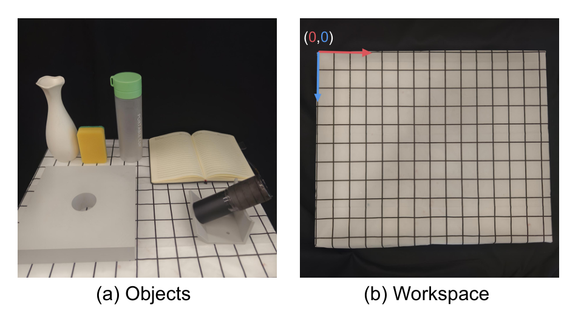
视触觉双手平台与遥操作采集
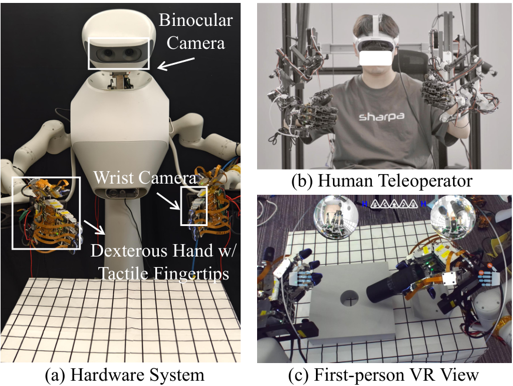
ViTacFormer 的条件 VAE 动作建模
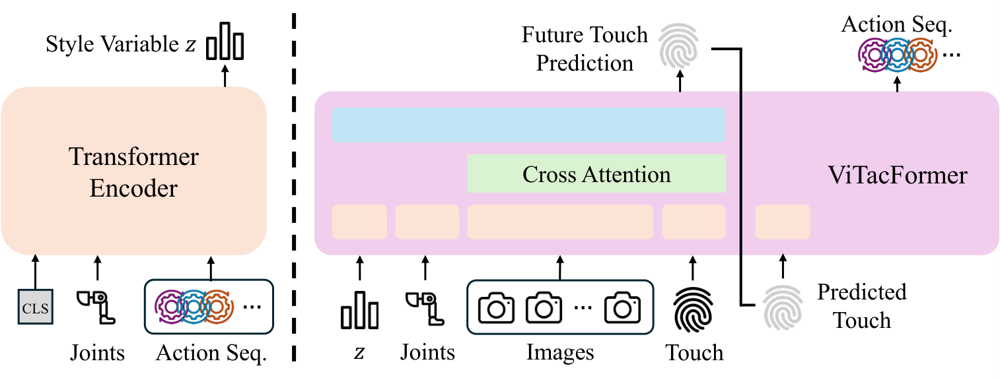
视觉—触觉 cross-attention 融合
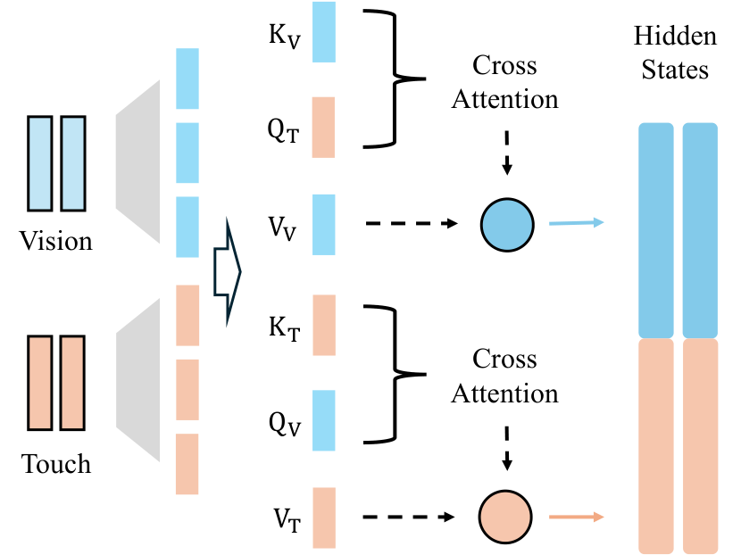
5. 实验设计、结果与消融
5.1 任务、数据与评估协议
论文设置 peg insertion、cap twist、vase wipe、book flip 四个短程任务，覆盖插入、旋转、擦拭和翻动等不同接触模式。这些任务共同检验触觉是否能帮助策略处理细粒度对齐、摩擦和手物相对运动。长程任务使用多个组件和预定义区域，要求机器人在随机初始化下持续操作。论文报告最多 11 个连续阶段和约 2.5 分钟持续操作，这类结果比单步成功率更能说明 tactile prediction 对误差累积有帮助。摘要报告 ViTacFormer 在真实 benchmark 上相对 prior SOTA 约 50% 成功率提升。这个数字需要结合任务难度理解：提升来自多模态表示、未来触觉预测和课程学习共同作用，而不是单一大模型规模。
5.2 主结果如何支持论文主张
论文也展示失败案例，说明系统仍会在任务特定接触、对象姿态或控制误差上失败。失败图的价值在于告诉复现者：触觉并不能完全消除硬件和策略误差，它只是让策略更早感知接触偏差。消融应重点关注去掉 future tactile prediction、cross-attention 或课程学习后的差异。若只保留触觉输入但没有未来预测，模型可能退化成被动感知；若去掉 cross-attention，视觉和触觉之间的对齐关系会变弱。
四类相机视角的互补信息
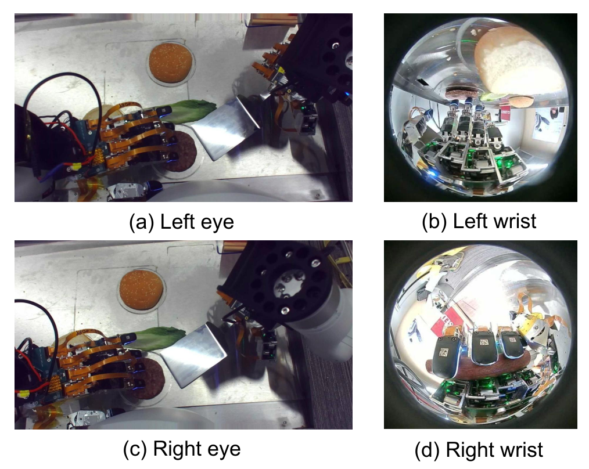
四项短程视触觉任务的完整执行
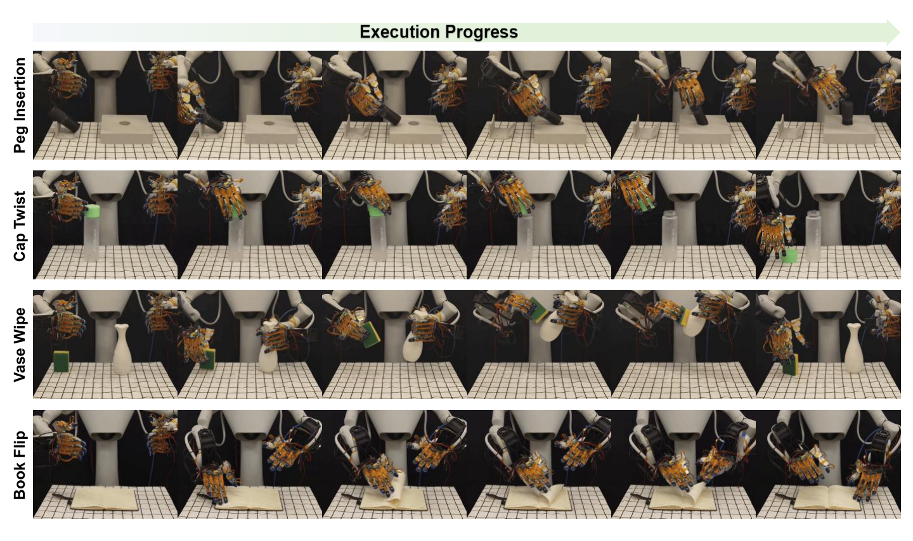
按任务拆分的失败案例
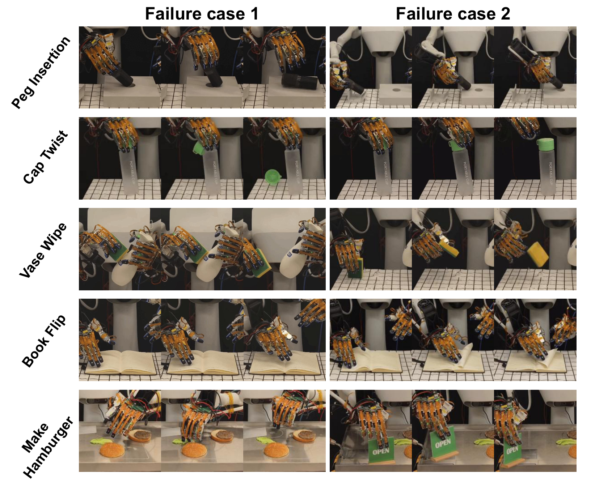
汉堡任务的对象布局与随机区域
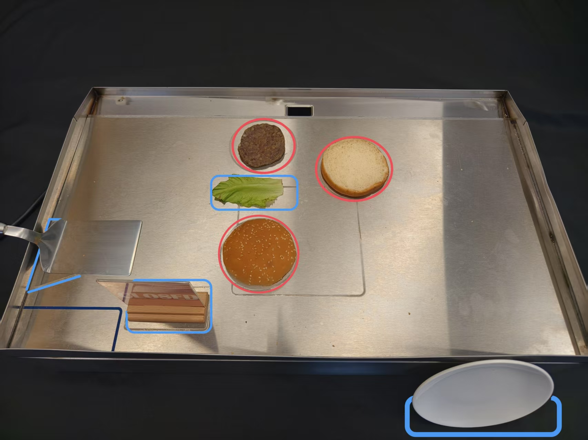
短程 benchmark 的四种接触模式
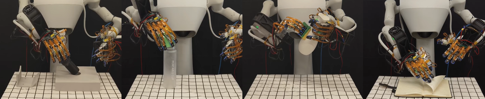
汉堡任务的 11 阶段成功 rollout
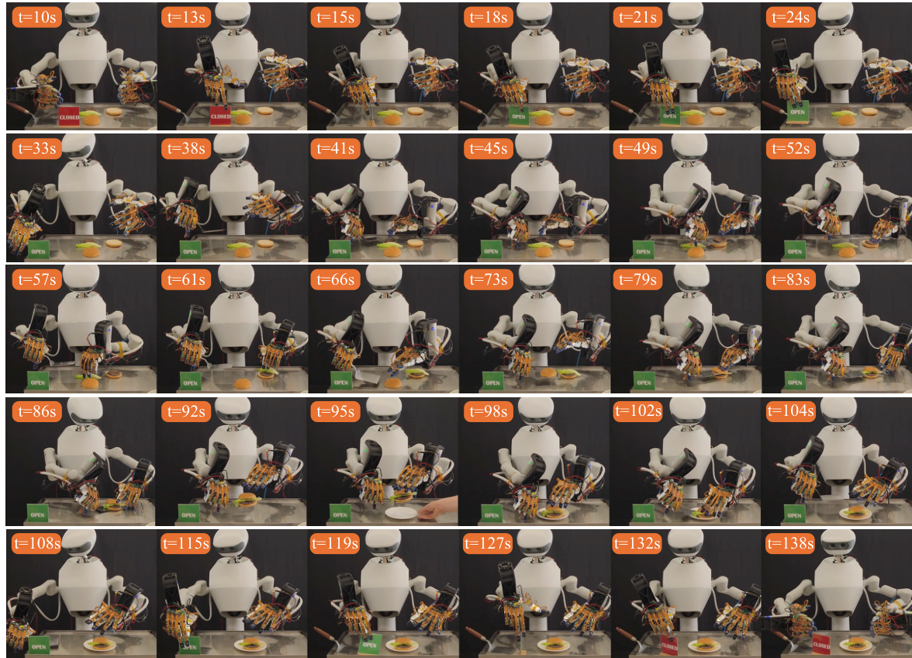
组件消融的任务成功率
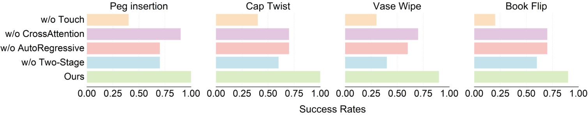
人工质量评分的组件消融
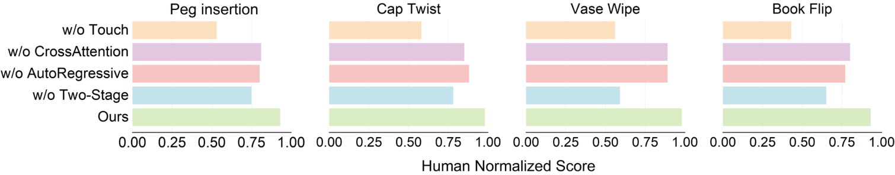
插销任务的失败模式
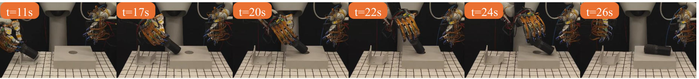
6. 复现路线与工程风险
6.1 最小可行复现路径
建议先复现单手或单任务的触觉-视觉 BC，再扩展到双手长程任务。最小版本需要多视角 RGB、关节状态、指尖触觉和专家动作序列；如果没有同款 SharpaWave，可先在现有 tactile hand 上验证 future tactile prediction 是否改善接触任务。遥操作系统是复现成本核心。需要同步视觉、触觉、关节和动作，保证 tactile image 与具体手指、关节姿态和任务阶段对齐。任何时间戳漂移都会让未来触觉预测目标变脏。训练需要同时处理 action sequence、style latent、cross-attention 融合和 tactile prediction。
6.2 数据与标定准备
验收指标不应只看训练 loss，还要看触觉预测可视化、短程任务成功率和长程阶段完成数。最大风险是硬件差异和触觉传感器域差异。不同 tactile sensor 的成像、分辨率和接触材质差异会影响 learned representation，因此复现时需要重新校准或微调触觉 encoder。
7. 分析、局限与边界
7.1 最有价值的贡献
最有价值的是把未来触觉预测作为控制相关表示学习目标。它把触觉从“当前接触照片”变成“动作后果预测”，更接近灵巧操作需要的闭环控制信号。硬件、短程任务、长程任务和失败案例共同支撑论文主张：触觉表示确实能帮助真实多指操作。尤其是长程任务结果说明提升不是单个 benchmark 上偶然拟合。论文仍高度依赖特定硬件、触觉传感器和遥操作数据。它没有解决低成本跨手型迁移，也没有把语言目标或高层规划纳入同一框架。可以把 ViTacFormer 作为低层触觉专家，与 VLA planner 或 WAM planner 结合；也可以研究跨传感器 tactile representation，让不同触觉硬件共享未来接触预测目标。
拧盖任务的失败模式
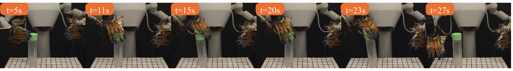
翻书任务的失败模式
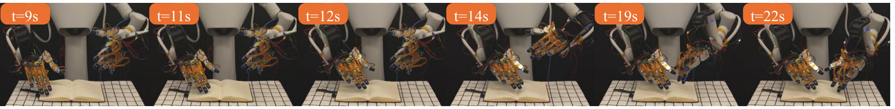
证据深挖：机制、实验与复现判断
触觉在哪些阶段真正提供增量
插销接近孔位和翻页寻找纸边时，视觉能给出全局几何，但手部遮挡后很难判断是否已经建立正确接触；拧盖和擦拭则需要在持续运动中保持压力和摩擦。触觉的价值因此不是替代视觉定位，而是在视觉不确定的最后接触阶段提供闭环信号。消融若只在这些阶段显著下降，恰好说明两种模态存在合理分工。
CVAE 与 cross-attention 的分工
条件 VAE 用 latent 表达同一视觉—触觉状态下可能存在的多种可行动作，例如从不同方向重新对准；cross-attention 则决定视觉 token 在预测时读取哪些触觉位置。前者解决动作分布多峰，后者解决模态关联。将两者混为一个‘多模态 transformer’会失去可解释性，复现时应分别检查 latent 使用情况与 attention 对接触区域的响应。
汉堡任务为什么比短程成功率更严格
11 个阶段将抓取、放置、工具使用和双手状态连续串联，早期轻微偏差会改变后续对象位置，模型不能每一步都从标准初始状态开始。长程成功因此检验状态分布漂移和恢复能力，而不只是单技能平均水平。更完整的报告还应提供每阶段到达率与失败转移矩阵，说明整条任务失败究竟由哪个接触步骤主导。
失败案例给出的研究方向
插销失败指向局部姿态和搜索策略不足，拧盖失败指向持续力与滑移估计不足，翻书失败则暴露薄物体和摩擦感知边界。这些问题不太可能只靠增加示范彻底解决。更有价值的下一步是把触觉用于显式接触状态、滑移预测和局部动作重规划，并让策略在检测到失败后执行可解释的恢复动作。
8. 组会问答与阅读结论
ViTacFormer 的关键取舍
ViTacFormer 的价值在于把触觉放入动作生成闭环，并用插入、扭转、擦拭、翻页和 11 阶段汉堡任务检验不同接触模式。失败案例表明触觉并未自动解决力控和精细几何；最值得继续研究的是让触觉不仅作为观察 token，还能驱动显式接触状态估计与局部纠偏。
Q1：为什么未来触觉预测比当前触觉编码重要？
因为控制决策关心当前动作会如何改变接触，而不仅是现在接触长什么样。未来预测让 latent 学到接触 dynamics。
Q2：ViTacFormer 与普通 Diffusion Policy 的差别？
普通 DP 主要依赖观测到动作的拟合；ViTacFormer 额外学习视觉-触觉跨模态表示和未来 tactile signal，从训练目标上强化接触理解。
Q3：50% 提升能说明什么？
说明触觉融合在这些真实任务上带来显著收益，但具体贡献还要看去掉 future prediction、cross-attention 和 curriculum 的消融。
Q4：最难复现什么？
不是模型结构，而是高质量同步触觉-视觉-动作数据和稳定的多指硬件执行。
Q5：如何用于我们的研究？
可以把它作为灵巧手低层 contact-aware controller，再接语言目标或 world model 做更长程任务。
阅读结论与研究启发
ViTacFormer 适合放在灵巧手触觉/泛化专题的前排阅读。建议围绕“表示如何服务真实接触控制”设计复现：先复现中间表示，再接策略，再评估真实任务边界。